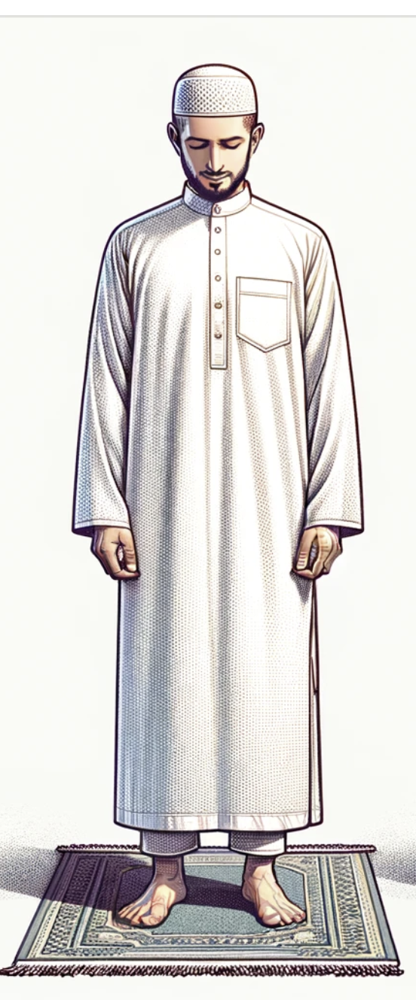
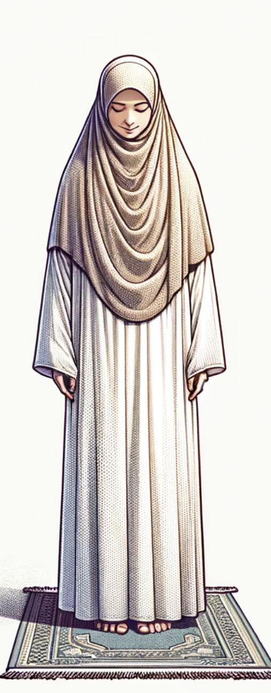

Modest clothing in Islam emphasizes dignity, self-respect, and privacy for both men and women. It reflects obedience to Allah, promotes moral behavior, and minimizes vanity. Modest attire fosters social harmony, protects individuals from undue attention, and upholds Islamic values of decency, humility, and respect within the community.
In Islam, both men and women are required to dress modestly, but the specifics differ:
Men's Clothing:

Coverage: Men must cover from the navel to the knees, may include the shin, but the ankle must remain visible.
Modesty: Clothing should be loose and not transparent, avoiding tight-fitting attire that accentuates the body.
Simplicity: Men are encouraged to avoid extravagant or ostentatious clothing and to refrain from wearing silk or gold.
Women's Clothing:

Coverage: Women are required to cover their entire body except for the face and hands, though some interpretations also cover the face.
Modesty: Clothing should be loose and opaque, not revealing the shape of the body.
Hijab: A headscarf (hijab) is often worn to cover the hair, neck, and chest, reflecting modesty and privacy.
These guidelines aim to promote modesty, decency, and humility, aligning with Islamic principles of behavior and interaction in society.